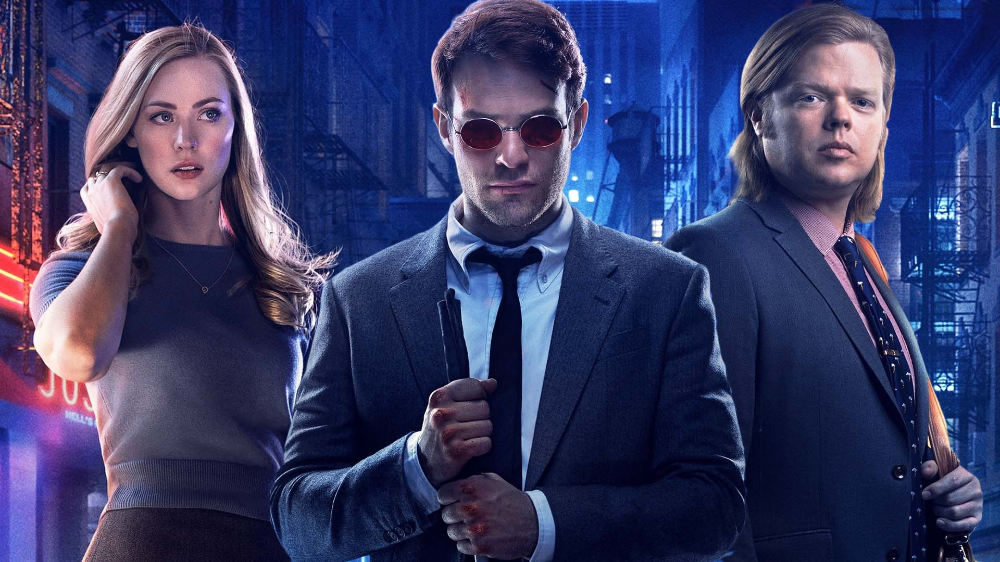
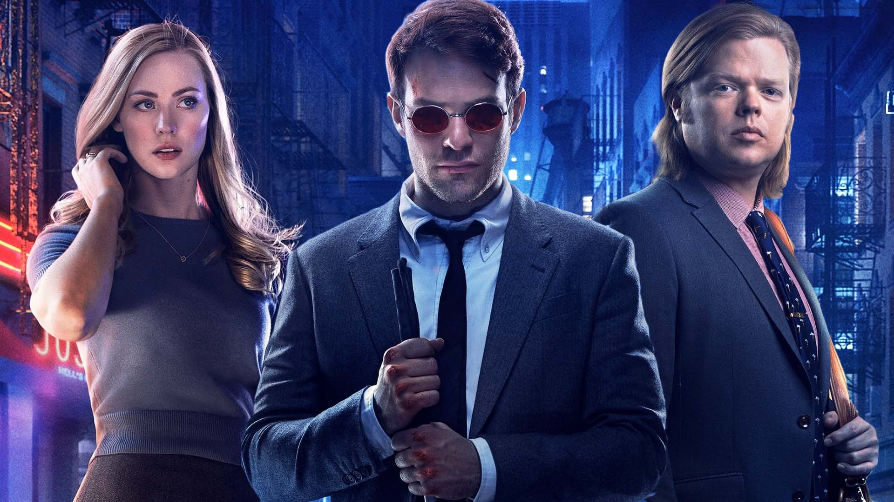
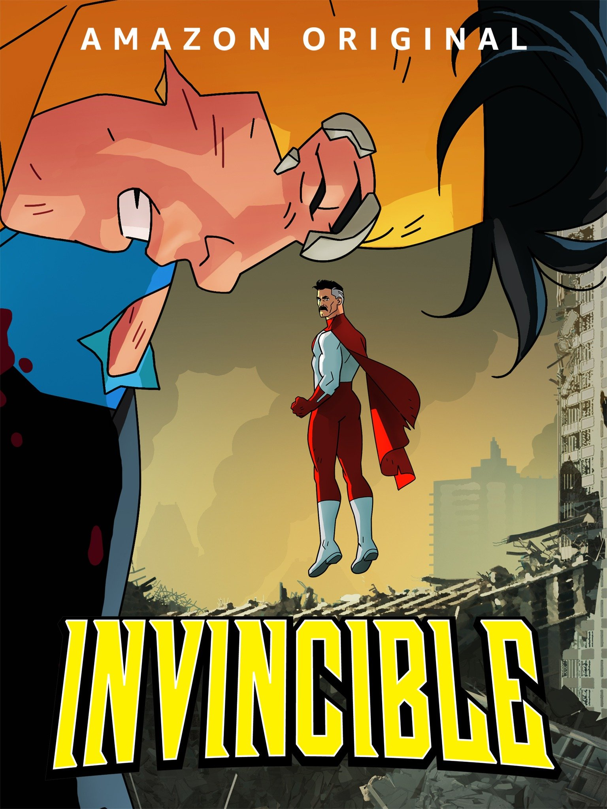
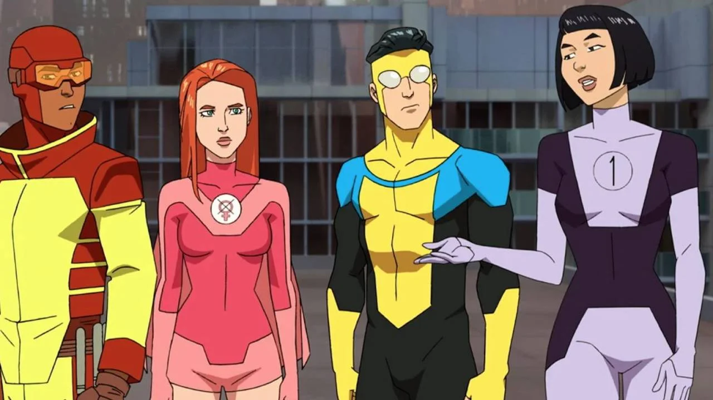

Mr. Robot:
Mr. Robot es una serie de televisión de género techno-thriller y drama estadounidense creada por Sam Esmail. Protagonizado por Rami Malek como Elliot Alderson, un ingeniero de seguridad informática y pirata informático que padece un trastorno de identidad disociativo, trastorno de ansiedad social y depresión clínica.
Sinopsis:
La serie gira en torno a Elliot Alderson, un joven ingeniero de seguridad que trabaja en la empresa neoyorquina de seguridad informática Allsafe. Constantemente luchando con el trastorno de ansiedad social, trastorno de identidad disociativo y depresión clínica, el proceso de pensamiento de Elliot parece fuertemente influido por la paranoia y el delirio. El se conecta con las personas hackeándolas, lo que lo lleva a actuar como vigilante clandestino de internet.
Un día es reclutado por Mr. Robot, un misterioso anarquista lider de un equipo de hackers conocido como fsociety al cual se una. Una de sus misiones principales es cancelar todas las deudas de crédito destruyendo los datos de una de las corporaciones más grandes del mundo, E Corp (que Elliot percibe como Corporación Malvada), que también es el principal cliente de Allsafe.Trailer de la serie:
Imagenes de la serie:


Daredevil:
Daredevil es una serie de televisión estadounidense de género dramático y acción, basada en el personaje de Marvel Comics, del mismo nombre la cual está ambientada en el Universo cinematográfico de Marvel,
Sinopsis:
Esta serie de Daredevil gira en torno a Matthew Murdock ,un hombre que trabaja de abogado de día y superhéroe de noche. A pesar de estar ciego, posee un oído, un olfato, una fuerza y una agilidad increíblemente desarrolladas. Sin descanso, Matthew Murdock recorrerá las calles de Nueva York a la caza de todo tipo de criminales a los que no puede castigar un tribunal
Trailer de la serie:
Imagenes de la serie:
 


Rick y Morty:
Rick y Morty es una serie de televisión americana de animación para adultos creada por Justin Roiland y Dan Harmon en 2013 para Adult Swim, también se emitió en Cartoon Network.
Sinopsis:
La serie sigue las desventuras del "científico loco" Rick Sánchez ,y su fácilmente influenciable nieto, Morty, quienes pasan el tiempo entre la vida doméstica y los viajes espaciales, temporales e intergalácticos.
Trailer de la serie:
Imagenes de la serie:


Invincible:
Invincible es una serie de televisión de animación para adultos creada por Robert Kirkman para Amazon Prime Video en 2021
Sinopsis:
Mark Grayson es un adolescente cuyo padre Nolan es "Omni-Man", el superhéroe más fuerte del planeta. Poco después de su decimoséptimo cumpleaños, Mark comienza a desarrollar sus propios poderes pero a medida que Mark utiliza sus poderes para el bien, descubre que el legado de su padre puede no ser tan heroico como parece.
Trailer de la serie:
Imagenes de la serie:
 